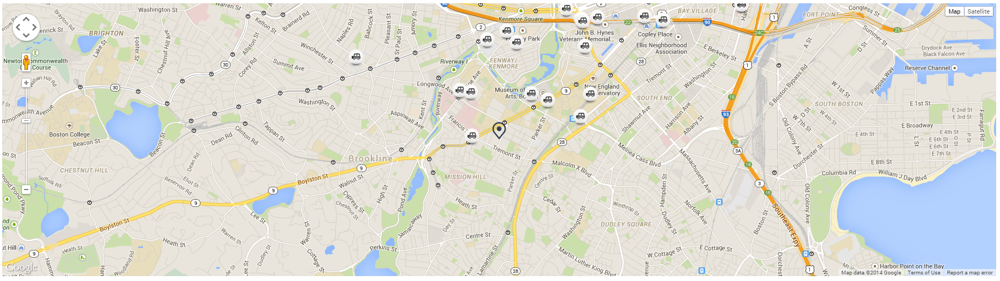
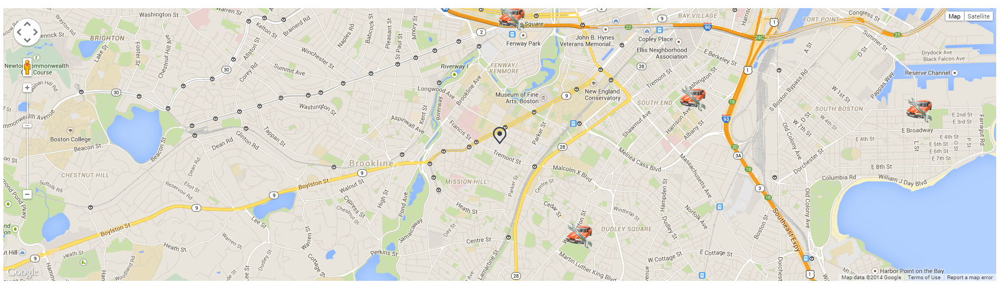

Map Info Page Exaplanation :
User would like to see map information about cars. Google maps are very popular to fetch nearby places information. In this tab I am providing Car Parking Locations and Car Service centers .
Base Technologies used:
1) Java Script
2) css HTML
Responsive:
Fully Responsive , no Bootstrap Used.
API Information :
GOOGLE MAP API
Access To the page:

Sample Output: On click of the button it will fetch nearby car service centers.

Access To the page:
Sample Output: On click of the button it will fetch nearby car service centers.

For more technical details go to the experiment - > CLICK HERE
Source CodeHTML
JS
Style Sheet of the MAP Page